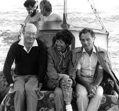

Fieldwork History
Keros and the Special Deposits
Looters damaged Keros in the years before 1963, but early rescue work showed the site to be unusual in nature, with lots of broken marble figurines and vessels. Scientific work in 2006-2008 showed that Kavos area on the west coast of Keros was site of two ‘special deposits’, areas where people deliberately (and probably ritually) deposited broken choice material over a period of three centuries or more. The analysis of these data shows that Kavos was the site of the world’s earliest maritime sanctuary. Click here to learn what that means, and much more about the two special deposits.
Dhaskalio and the Role of Metalworking
Dhaskalio, now a tiny islet just off the west coast of Keros, was joined to Kavos and the area of the special deposits by a causeway in the Early Bronze Age, as the sea level was lower then. Recent work on Dhaskalio has revealed unprecedented monumental architecture, and remarkably precocious evidence for metalworking. Now we are beginning to understand that the story of Keros includes intensive periods of production of prestigious objects like daggers, which might have been just as potent symbols for the Cycladic islanders as the marble figurines were. Click here to learn more about Dhaskalio and its relationship with Kavos.
Keros as Nexus
One important question is the relationship between Kavos and Dhaskalio: how were the activities of production on Dhaskalio interrelated with the apparently more ritual activities on Kavos? But another, similar, question is the relationship between the Dhaskalio and Kavos complex and larger areas: the island of Keros, for example, or the nearby islands, or the wider world of the Cyclades and the Aegean? In order to investigate this question we conducted a series of larger-scale surface investigations (surveys) on Keros itself, nearby Kato Kouphonisi, and in the southeast coastal region of Naxos. Click here to learn more about the Keros nexus.
The boat to Keros 1963

Outreach and Media
The Keros Project’s work has been featured in several news articles, and even a documentary! Find links to these below
{kind=link}
The Enigma of Keros/Το αίνιγμα της Κέρου - Hellenic Broadcasting Corporation (ERT)
{kind=link}
Keros and the Mystery of the Broken Idols - National Geographic
{kind=link}
Interview with Colin Renfrew - Tiny Epics
Funders
It would be impossible to continue our leading research without our generous funders. If you would like to help us continue our exciting work on Keros, please contact us.
{kind=link}
{kind=link}
{kind=link}
{kind=link}
{kind=link}
{kind=link}
Where is Keros?
The Cyclades
Cycladic Island archipelago was an important region throughout antiquity, and the islands have been inhabited since at least the Paleolithic. In the Neolithic and Early Bronze Age, the islands flourished and (as in all periods) they acted as important stepping stones between the landmasses of Europe and Asia.
The Early Bronze Age
Keros is located in the Small Cyclades (Μικρές Κυκλάδες), an island complex within the Cycladic archipelago to the south-east of Naxos, in the Aegean sea.
Contact us
We would love to hear from potential collaboratos, funders, or interested people.